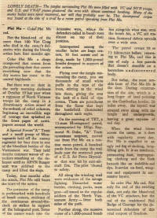
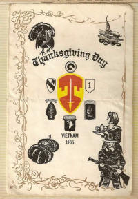
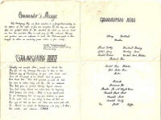
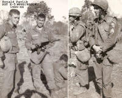
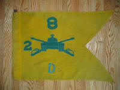
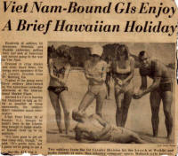
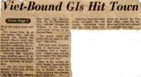

Vietnam Photos 1965-1966
Operational photographs, airstrikes, patrols, and trooper portraits. Click any image to view the full photograph and field notes.







Operational photographs, airstrikes, patrols, and trooper portraits. Click any image to view the full photograph and field notes.






